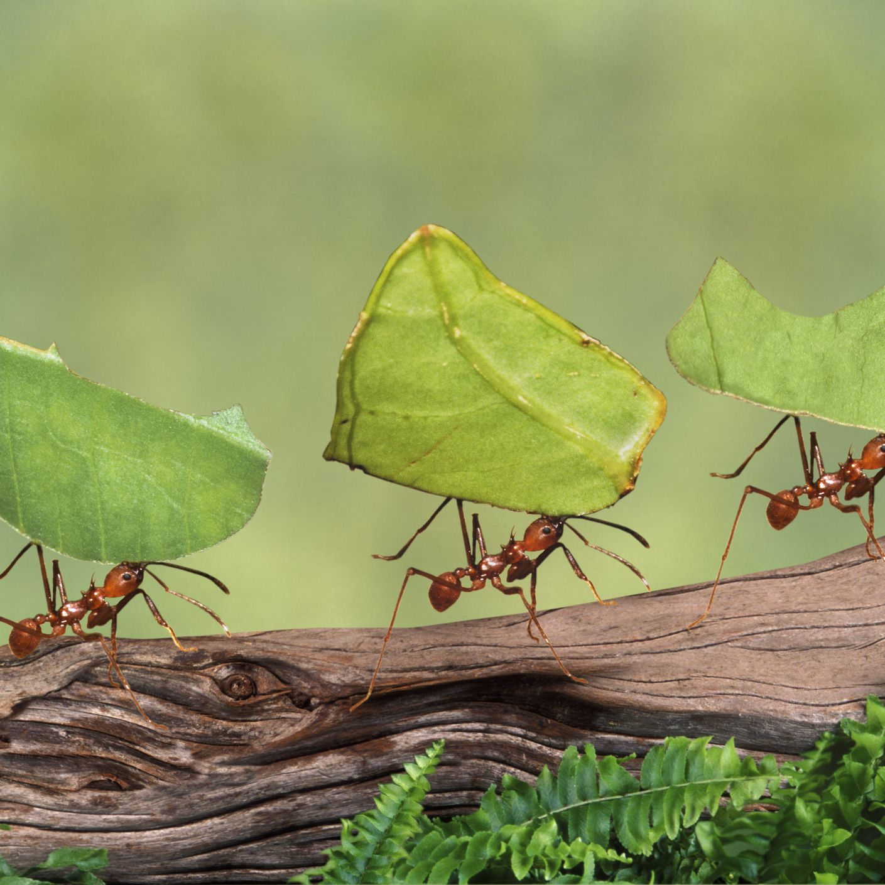
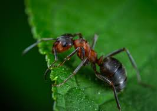

Ant
FormicidaeAnts evolved from vespoid wasp ancestors in the Cretaceous period, and diversified after the rise of flowering plants. More than 13,800 of an estimated total of 22,000 species have been classified.
They are easily identified by their geniculate (elbowed) antennae and the distinctive node-like structure that forms their slender waists.
Most ants are generalist predators, scavengers, and indirect herbivores, but a few have evolved specialised ways of obtaining nutrition. It is believed that many ant species that engage in indirect herbivory rely on specialized symbiosis with their gut microbes
The female worker ants do not have wings and reproductive females lose their wings after their mating flights in order to begin their colonies. Therefore, unlike their wasp ancestors, most ants travel by walking. Some species are capable of leaping.
“All good work is done the way ants do things: Little by little.”
- Appeared: 120 million years ago
- Type: invertebrate
- Avarage age: 8 months
- Worker weight: 0.003g
- Queen weight: 0.050g
- Family: Formicidae
The life of an ant starts from an egg; if the egg is fertilised, the progeny will be female diploid, if not, it will be male haploid. Ants develop by complete metamorphosis with the larva stages passing through a pupal stage before emerging as an adult
Contrary to popular belief, some ant nests have multiple queens, while others may exist without queens. Workers with the ability to reproduce are called "gamergates" and colonies that lack queens are then called gamergate colonies; colonies with queens are said to be queen-right.